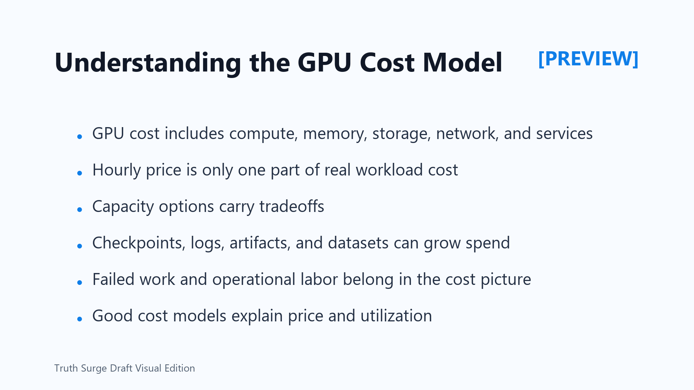

Understanding the GPU Cost Model
Connecting to LMS... Progress: in progress

Narration
A useful GPU cost model looks beyond the visible price of a compute instance. The workload may consume GPU capacity, attached CPU and memory, local disks, remote volumes, object storage, snapshots, network transfer, managed orchestration, logging, monitoring, and support time from engineers and operators.
Price and effective cost are not the same thing. A lower-priced resource that sits idle, waits on storage, fails repeatedly, or requires manual recovery may be more expensive than a better-matched resource that completes reliably. Effective cost asks how much useful output the team receives for the money spent.
Capacity choices also have tradeoffs. On-demand usage can be simple and flexible. Reserved or committed capacity can help predictable demand but may create waste if the workload changes. Interruptible or preemptible capacity can reduce spend when jobs can tolerate stops and restarts, but it needs checkpointing and retry design.
Hidden costs often live around the job. Large datasets may be copied repeatedly. Checkpoints may accumulate. Logs and metrics may grow without retention rules. Artifacts from old experiments may remain long after the decision they supported.
Operational labor should be part of the picture. If a workload requires frequent manual cleanup, investigation, reruns, or emergency budget review, that effort has cost. A good model explains both what the platform charges and how well the workload uses what it allocates. It also helps teams compare alternatives without pretending that the listed compute rate is the whole story.